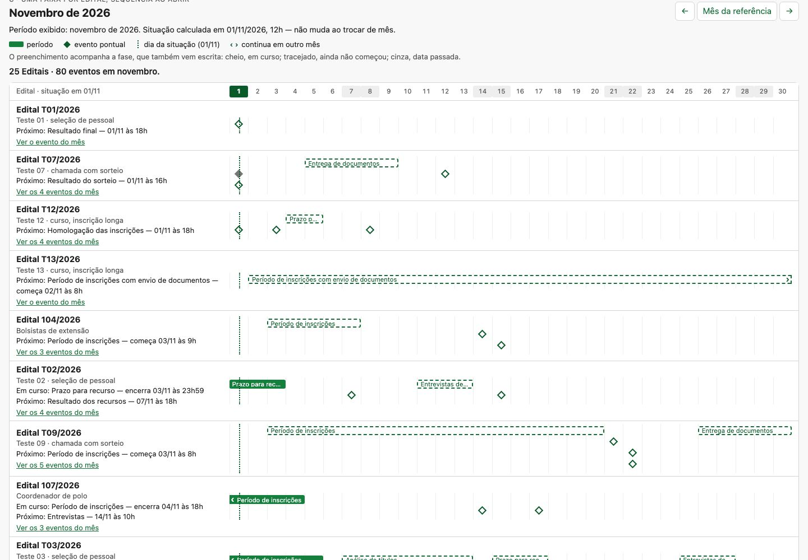
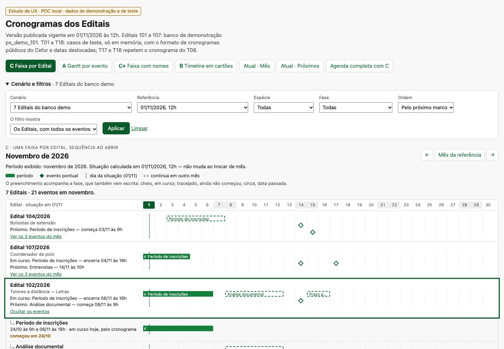
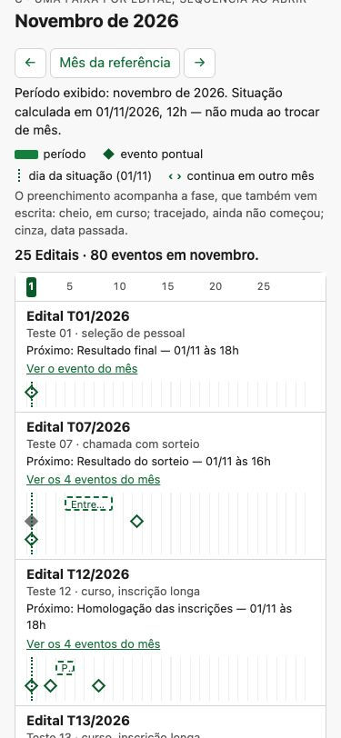
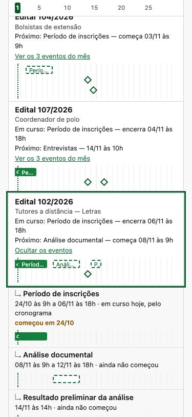
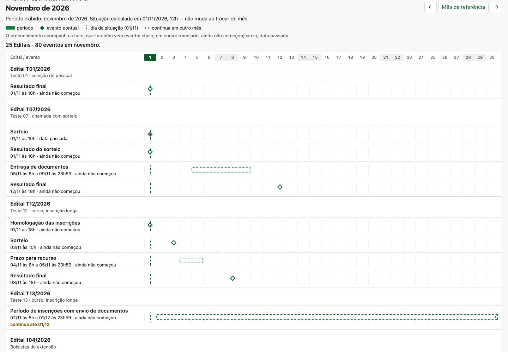
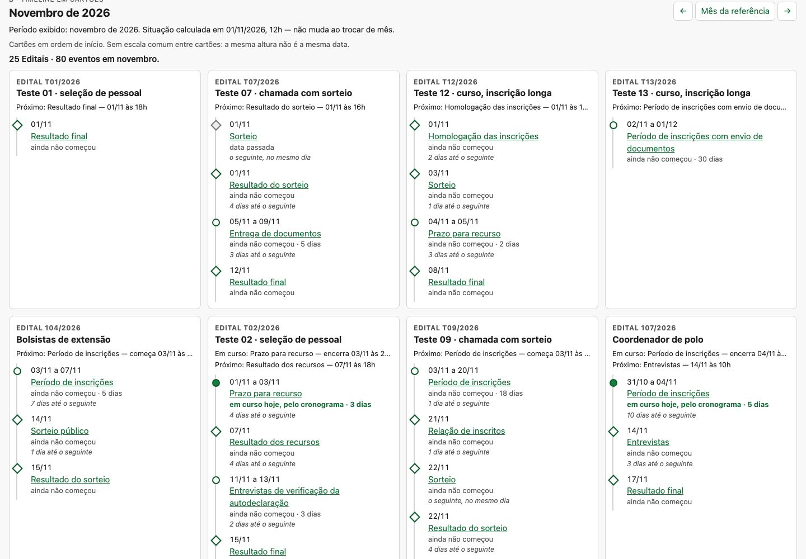
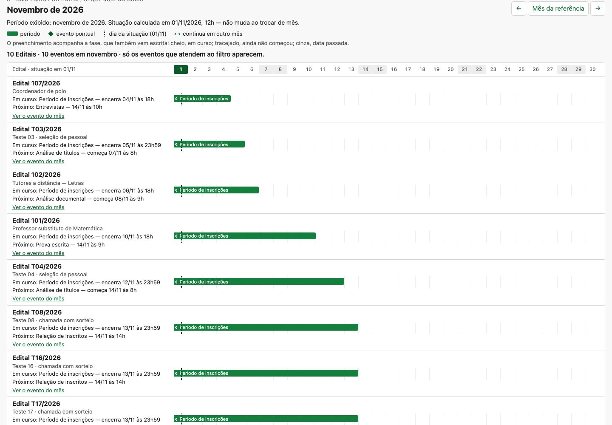
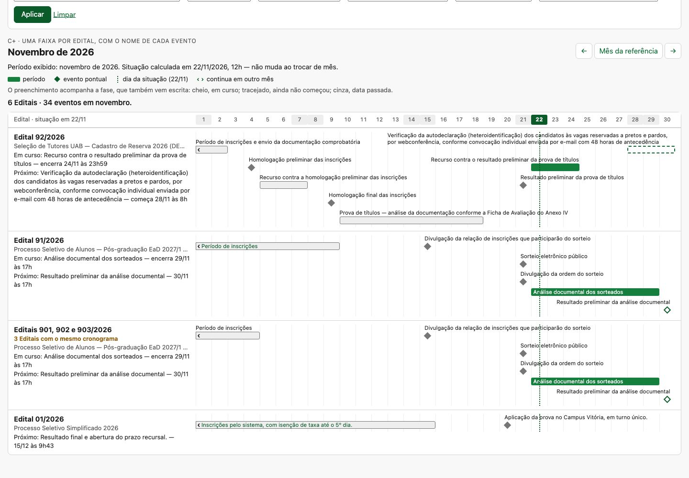

A Agenda dos Editais (spec 101, mergeada em 30/10, #336) mostra os cronogramas publicados e vigentes dos Editais da unidade. A página tem três camadas:
D-003 a definiu como a forma natural no celular.Código: backend/processo_seletivo/interface/agenda.py (ler, marcos_do_conteudo,
periodos_do_conteudo, dataclasses Marco e Periodo), templates
interface/agenda.html, _agenda_mes.html e _agenda_proximos.html, e a folha
interface/telas/agenda.css. A leitura usa a versão consolidada vigente no instante (versoes_vigentes),
avisa as Retificações a vigorar e calcula fase e espécie no backend.
style="", <style> e <script> inline.A lista de períodos é correta, mas obriga a ler e comparar datas linha por linha. Um período de três dias e um de três meses têm o mesmo peso visual. A lista não agrupa por Edital nem mostra a sequência de cada um, já que os eventos pontuais ficam só na grade. E não deixa ver o que acontece ao mesmo tempo. O pedido original listava sete perguntas que a tela deveria responder sem leitura extensa:
Achado central: três dessas perguntas (1, 3 e 5) já têm boa resposta em Próximos marcos, e a 7 já é respondida pela grade. A lacuna real são as perguntas 2 e 4, simultaneidade e distribuição, e é a lista de períodos que deveria cobri-las. Por isso a proposta substitui a lista e não a página.
A numeração dos Editais do Cefor é sequencial no ano. Existe o 173/2025. Em 2026, o 14 é de 05/02, o 28 de 07/04, o 69 de 03/07, o 78 de 05/08 e o 89 de 24/09, o que dá cerca de dez por mês. Nas amostras, os cronogramas duram de três semanas (chamada com sorteio) a dois meses e meio (seleção de pessoal). Isso resulta em algo entre 10 e 25 Editais vivos ao mesmo tempo. É uma estimativa grosseira: nem todo número é processo seletivo. Precisa ser confirmada com a coordenação.
O primeiro estudo, do mesmo dia, está em doc/estudo-visualizacao-cronogramas-2026-11-01/, sem rastreamento
git no checkout principal, fora de qualquer branch. Ele comparou A (Gantt) e B (timeline) e recomendou "A para
comparar no desktop, B para o celular". A investigação do código foi correta e o exportador lia o banco sem
gravar nada. Mas seis problemas mudavam a conclusão:
| # | Problema | Consequência |
|---|---|---|
| 1 | A desenhava o marco pontual no dia seguinte sempre que o evento era depois do meio-dia. O código usava primeiro*24+12 com primeiro fracionário, somando a hora à meia coluna. | Derruba a "clareza temporal", o principal argumento a favor de A. O defeito é visível nas próprias capturas: o 20/11 aparece entre as colunas 20 e 21. |
| 2 | Densidade testada com 12 cronogramas sintéticos idênticos. | Doze barras iguais empilhadas não testam a leitura de processos em fases diferentes. |
| 3 | D-003 ignorada: B foi recomendada para o celular sem ser comparada com Próximos marcos. | A proposta disputava o lugar de uma visão já decidida e já melhor nas perguntas de prazo. |
| 4 | Recomendação contraditória: recusava duas apresentações por dispositivo e propunha três (A, mais a lista textual, mais B como modo opcional). | O custo de manutenção ficava maior do que o da opção que o próprio estudo recusou. |
| 5 | A terceira alternativa foi descartada sem ser construída. | A tela mais legível do estudo era a A recolhida (uma linha por Edital), que aponta justamente para essa alternativa. |
| 6 | A suíte completa (20 min) rodou para uma mudança só em doc/. No fim, foram cancelados DROP DATABASE num cluster compartilhado e a execução terminou com código 2. | Custo e risco sem prova nenhuma sobre o estudo. |
Defeitos menores: a A tinha largura fixa de 960 px, deixando só 51 px de régua no celular. B tinha uma faixa horizontal de largura fixa que parecia proporcional à duração e não era. E a A expandida desenhava cada barra duas vezes.
ps_demo_101 (101 a 107), a demonstração da Agenda, incluindo a Retificação
real do 106: a prova passa de 21/11 para 23/11, com vigência em 04/11.marcos_do_conteudo e periodos_do_conteudo do produto. As telas atuais
foram renderizadas pelo próprio agenda.ler e pelos templates de produção com os mesmos 25 Editais,
de modo que a comparação é contra a interface real.A régua é por dia, não por hora, com colunas em porcentagem. Um período vai da coluna do primeiro dia à do
último, inclusive, usando a mesma pertinência de Periodo.abrange que dá o número da grade. Um pontual fica no
centro da coluna do seu dia. Isso elimina a classe de defeito do item 1 e faz a régua caber em qualquer largura.






Um parecer externo, feito sobre a versão 1 deste briefing e sobre capturas da agenda real, concordou com C como direção e apontou problemas de legibilidade. A maior parte procedia, inclusive contra este estudo:
| Apontamento | O que mudou na POC |
|---|---|
| "Tudo o que A mostra, C mostra ao abrir" era um argumento fraco: informação atrás de um clique não se compara de relance. | Ao abrir, C mostra a linha de A para cada evento daquele Edital, sob a mesma régua. Argumento retirado. |
| Losangos sem nome; rótulos cortados ("Prazo pa…"); situação cortada justamente na próxima etapa. | Situação em até duas linhas inteiras, com hora. Nomes inteiros, fora da barra, na linha aberta. |
| Dois marcos coincidentes pareciam um só. | Pontuais no mesmo dia ou em dias vizinhos vão a faixas próprias (T07: sorteio e resultado em 01/11). |
| "›" não distinguia "continua" de "sem término"; faltava a hora do prazo. | "começou em 24/10", "continua até 06/12" e "sem término definido" escritos; barra sem término esmaece no fim. |
| A situação calculada em 01/11 aparecia sem aviso ao navegar para dezembro. | "Período exibido: … Situação calculada em 01/11 — não muda ao trocar de mês." |
| A legenda era um parágrafo com oito convenções. | Quatro amostras visuais; a fase passou a ser dita em texto em cada linha. |
| A captura mais convincente dependia do filtro por fase, que o MVP adiava; o alcance do filtro não estava claro. | Filtro de fase entra no MVP. Novo controle: "os Editais, com todos os eventos" ou "só os eventos filtrados". |
| A medição comparava C (painel) com calendário + lista. | Nova página: a grade real + C. Medição de Agenda inteira contra Agenda inteira (abaixo). |
Não adotado: nomes curtos para exibição. A descrição do evento é texto do Edital publicado; encurtá-la exigiria campo novo (persistência) ou abreviação automática (o sistema reescrevendo o ato). O nome sai inteiro, com quebra de linha. Régua com rolagem horizontal na visão geral repete o que derrubou a primeira A; fica, no máximo, para o detalhe de um Edital.

Um terceiro estudo (doc/estudo-organizacao-agenda-2026-11-01/, sem commit no checkout principal) propôs um mapa
semanal por Edital com o nome dos eventos em cada célula (D; e G, com o calendário recolhido) e recomendou testar G contra C
revisada. A avaliação desse estudo apontou:
C+ escreve o nome de cada evento uma vez, inteiro, sobre a mesma régua diária: dentro da barra quando cabe; senão, acima dela, começando no início da barra ou terminando no fim quando passaria do mês; rótulos que colidem descem de faixa. Cronogramas idênticos viram uma linha ("Editais 901, 902 e 903/2026 · 3 Editais com o mesmo cronograma"), cada um com seu detalhe — decisão do usuário em 01/11, depois de ver o esboço. No celular, onde a régua tem 10 px por dia, cada evento vira uma linha.

Os Editais dos prints, com horário. O cenário demo074 lê, somente leitura, o banco ps_074_local,
que tem publicados os seis Editais dos prints com os mesmos nomes de evento. As datas não são as do print: as sementes
as geram a partir do dia em que rodam, e nenhum banco local conferido reproduz as do print. Servem pelo formato e pelos
instantes, que a transcrição do estudo D–G não tem.
| 25 Editais, novembro | Agenda inteira, desktop | Agenda inteira, celular | Focos |
|---|---|---|---|
| Atual: calendário + lista | 2.780 | 4.929 | 33 |
| Calendário + C revisada | 3.828 (+38%) | 5.779 (+17%) | 25 + abertos |
| Calendário + C+ | 3.744 (+35%) | 11.654 (+136%) | 68 |
No desktop, C+ mostra todos os nomes na mesma altura que C revisada. No celular, custa mais que o dobro da Agenda atual: é o preço de A e B no celular, e é onde C revisada, que recolhe, leva vantagem. A conferência geométrica pegou um defeito novo de C+ no celular (recuo somado que deslocava as linhas da régua), já corrigido: 26 conferências, nenhuma fora.
Direção para o teste, ainda aberta: Atual × C+ × G, nos mesmos dados com instantes reais e com um cenário denso; C revisada como referência de recolhimento, sobretudo no celular; E e F em decisão separada.
Novembro, 25 Editais, 80 eventos, situação em 01/11 às 12h, num Chromium sem janela. Nenhuma tela rola de lado.
| Página | Desktop 1440 | Celular 375 |
|---|---|---|
| Atual: calendário + lista de períodos | 2.780 px | 4.929 px |
| Calendário + C revisada | 3.828 px (+38%) | 5.779 px (+17%) |
| Calendário + C+ (nomes visíveis, seção 6) | 3.744 px (+35%) | 11.654 px (+136%) |
| Painel | Desktop | Notebook | Tablet | Celular | Focos (fechado) |
|---|---|---|---|---|---|
| C revisada | 2.531 | 2.967 | 3.189 | 4.252 | 25 |
| C+ nomes visíveis | 2.312 | 2.599 | 2.898 | 8.636 | 68 |
| A Gantt por evento | 6.091 | 6.830 | 7.761 | 9.899 | 105 |
| B cartões | 3.370 | 4.184 | 5.679 | 9.631 | 80 |
Os 23 focos de C são de linhas fechadas; abrir um Edital acrescenta os eventos dele. Menos focos não é, sozinho, menos trabalho.
Geometria verificada: capturar.py confere cada losango e cada barra visível contra a célula da régua do mesmo dia — C
fechada, C aberta, A, quatro larguras, três meses, e C+: 26 conferências, nenhuma fora da coluna, console limpo. Na revisão, a conferência
pegou um defeito: o recuo das linhas abertas deslocava a trilha em relação à régua do cabeçalho. Corrigido. Isso prova
correção geométrica, não facilidade de leitura.
| Pergunta | Melhor resposta hoje | C | A | B |
|---|---|---|---|---|
| 1. Inscrições abertas | Próximos (bloco em curso) | "Em curso: …" em cada linha; ou filtro de fase | Igual, com mais linhas | Ler cartões |
| 2. Simultaneidade | Nenhuma | Alinhamento na régua | Idem, em 4.900 px | Não responde |
| 3. Próximo de encerrar | Próximos ("encerra em N dias") | Ordem + "encerra dd/mm às hh" | Varrer | Ler |
| 4. Distribuição num Edital | Partida entre lista e grade | Uma linha; aberta, um evento por linha | Bloco de 3 a 7 linhas | Lista sem escala |
| 5. Começa na próxima semana | Próximos 7 dias | Colunas 2 a 8 | Idem | Ler |
| 6. Atravessa meses | Lista (datas) | ‹ › e "continua até dd/mm" | Idem | Texto |
| 7. Concentração | Grade | Colunas visíveis num quadro | Não cabe num quadro | Não responde |
Uma faixa por Edital no lugar da lista de períodos do mês, em C revisada ou C+, a escolher com usuários contra a Agenda atual e contra G. Manter Próximos marcos e a grade. Descartar A e B como telas próprias. Não trocar a apresentação por dispositivo.
display:grid com classes grid-column: início / span dias: 31 classes de início e 31 de
extensão na folha da agenda, renderizadas no servidor e funcionando sem JS. Lembrete: toda classe citada no
template exige regra na folha (test_acessibilidade).Periodo.abrange, para que o comprimento da barra e o número da
grade não possam divergir (mesma lógica do SC-959).Periodo e Marco que
ler já produz.capturar.py serve como teste de regressão.#767676.abrange; pontuais no centro do dia e em faixas próprias quando coincidem; situação em
texto com hora; "Período exibido" separado de "Situação hoje"; controle de abertura que diz o que faz; linha por evento ao
abrir, com nome inteiro, datas com hora e continuidade escrita; ordem pelo próximo marco; legenda por amostras; filtros de
Edital, espécie e fase, com o alcance explícito.doc/, que a suíte não lê. O ruff passou nos dois scripts e a sintaxe do JS foi verificada. O estudo antigo,
sem commit, ficou intocado no checkout principal.Próximo passo sugerido, antes da spec: tarefas com duas ou três pessoas que acompanham Editais, na Agenda atual e na Agenda com C, no desktop e no celular, de preferência sobre a agenda real. Tarefas: encontrar a inscrição que termina primeiro; comparar quatro Editais com inscrições simultâneas; localizar o recurso de um Edital; identificar a etapa que avança para o mês seguinte; distinguir "continua" de "sem término". Registrar acertos, tempo, aberturas e consultas à legenda.
| Arquivo | O que é |
|---|---|
relatorio.md | O relatório completo deste estudo. |
prototipo/index.html | As POCs. Abrem com dois cliques, sem servidor: ?visao=c|a|b, cenario, mes, referencia, especie, fase, ordem. |
prototipo/agenda-completa.html | A grade real do produto e C no lugar da lista (?visao=n para C+). |
prototipo/dados-prints.js | Os seis Editais dos prints, lidos do ps_074_local (outras datas). |
prototipo/atual-*.html | A Agenda atual (Mês e Próximos, com 7 e 25 Editais), renderizada pelos templates de produção. |
exportar_dados.py | Lê o ps_demo_101 em READ ONLY, gera os casos de teste e grava dados.js e as páginas atuais. |
capturar.py | Capturas e medições por Playwright. Termina com erro se um marco ou barra sair da coluna ou se o console registrar erro. |
capturas/ | 50 capturas e o medidas.json. |